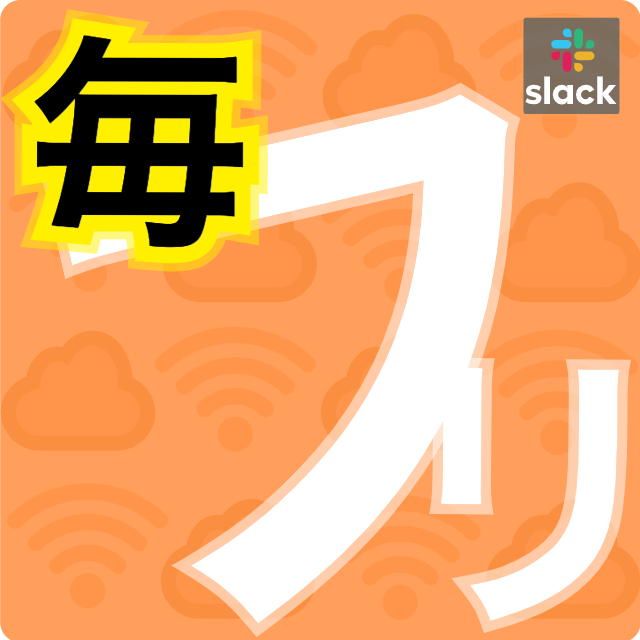
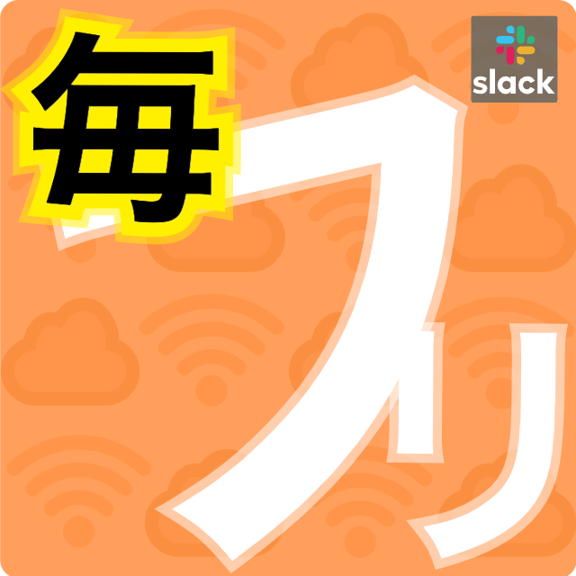

毎フリSlackアプリ

フリーランス案件を毎日おとどけします。
毎フリはインターネットで公開されている案件情報を毎にち収集して配信しています。
掲載元リンクでブラウザから詳細を確認できます。
Slackアプリ版ではアプリユーザーが案件を登録できて、ユーザー登録案件には応募することもできます。
４週間ごとの単価と案件数の推移を見られるので、市況感から適切な案件を探しましょう。
 

Slackワークスペースに毎フリSlackアプリをインストール
毎フリSlackアプリはワークスペース にインストールして利用します。
ボタンをクリックして、Slackアカウントにログインしたら、ワークスペース を選択します。
あなたが新規に作成したワークスペース にも、
メンバーがいる既存のワークスペース にもインストールできます。
毎フリアプリがインストールされています
フリーランスエンジニアのワークスペース
Code for Free
フリーランスエンジニアが情報交換するためのワークスペース
毎フリSlackアプリ
１度インストールしたら、あなたのチームのチャットルームでスラッシュコマンドが使えるようになります。
▼ 当日に公開された最新の案件が見られます。

▼ 直近12週間の平均の単価の推移が見られます。

▼ インターネットに公開されていない案件に応募できます。

▼ あなたがご存知の案件を登録できます。
毎フリアプリを使っているSlackユーザーで共有してください。

毎フリSlackアプリをインストールします。